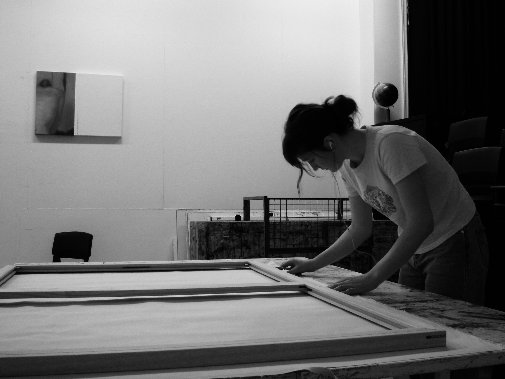

Bio
Ruby Archer (b.2003) is an emerging artist deeply engaged in her studio practice. She is currently perusing her BFA at RMIT University. With a determined focus in her practice of oils, Ruby is an artist dedicated to exploring the familial and domestic in her paintings informed through her candid photography.
The strong influence of photography informing her studio practice has led to group shows such as Winter Light.
